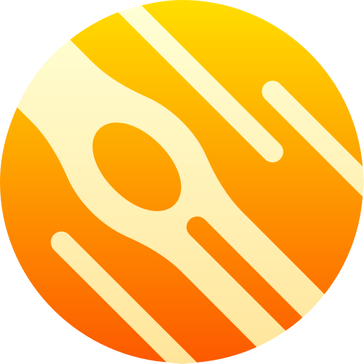

<mat-toolbar color="primary">
  <mat-toolbar-row>
    <a [routerLink]="['/']" style="display: flex;">
      
    </a>
      <span> UNSTAR </span>
    <span class="menu-spacer"></span>
    <div>
      <a mat-button [routerLink]="['/list-images']"> Photos Mars </a>
      <a mat-button [routerLink]="['/list-images-apod']"> Photos Astronomy </a>

    </div>
  </mat-toolbar-row>
</mat-toolbar>

